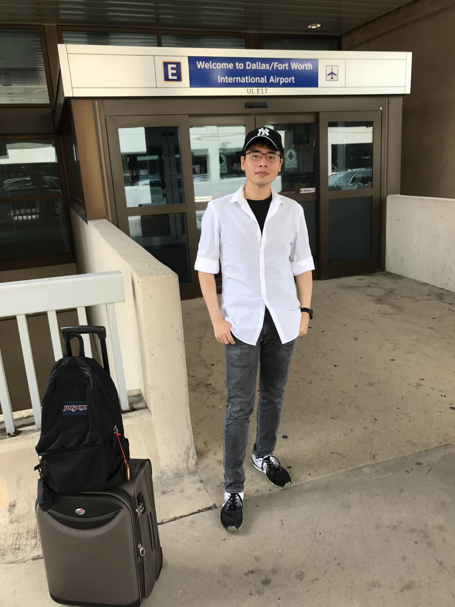
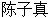

About Website
This website is a personal website created by Zizhen Chen during his study in Southern Methodist University (SMU). It introduces his research works and projects.
The website is written in HTML5 with CSS and JavaScript embedded P5.js library. It is recommended to use Browsers which support HTML5 well like Microsoft Edge, Google Chrome, Apple Safari 5+, Mozilla Firefox 4+, Opera 11+ and so forth to view my website.

About Author
Name: Zizhen Chen
Short Name: Z
Chinese Name: 
Web Name: DragonZ
Zodiac: Aries
Chinese Zodiac: Dragon
Favorite Food: La mian, a type of hand-made or hand-pulled Chinese noodle
Favorite Books:
<A Briefer History of Time>, Stephen Hawking, Leonard Mlodinow; Bantam; Reprint edition (May 13, 2008)
<Computers and Intractability: A Guide to the Theory of NP-Completeness>, M. R. Garey, D. S. Johnson; W. H. Freeman; First Edition edition (January 15, 1979)
<Introduction to Algorithms>, Thomas H. Cormen, Charles E. Leiserson, Ronald L. Rivest, Clifford Stein; The MIT Press; third edition edition (July 31, 2009)
<Operating System Concepts>, Abraham Silberschatz, Peter B. Galvin, Greg Gagne; Wiley; 8 edition (July 29, 2008)
<Fundamentals of Database Systems>, Ramez Elmasri, Shamkant Navathe; Addison-Wesley; 6 edition (April 9, 2010)
<Computer Architecture: A Quantitative Approach>, John L. Hennessy, David A. Patterson; Morgan Kaufmann; 5 edition (September 30, 2011)
Other: I was born in Shanghai, China and now I am a Computer Science Ph.D. student in SMU in Dallas, Texas, USA. My father is a Chinese language teacher in junior high school and he is also a Chinese Astonishing Stone collector. My mother is an accountant with good skills of cooking. It is really grateful for their support on my Computer Science studying abroad!